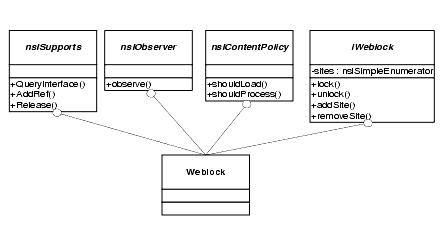

CHAPTER 7 Tutorial:
Finishing the Component
At this point you have created most of the infrastructure of the component. The component will be recognized by XPCOM and registered with the Category Manager so that it starts up when XPCOM initializes. When the component starts up, it populates a list of URLs read in from a file stored next to the gecko binary on the local system.
Using Frozen Interfaces
The core functionality of blocking sites is still missing, however. The interfaces needed to block certain URLs from loading are not frozen, and there is still some debate about how exactly this functionality should be exposed to embedders and component developers, so the APIs are not ready to be published. This puts you in the same situation as many developers using Mozilla-you want to use some specific functionality, but the interfaces seem to change on a daily basis.
All of the Mozilla source code is publicly available, and interfaces can be used easily enough. Grab the right headers, use the Component or Service Manager to access the interface you want, and the XPCOM object(s) that implement that interface will do your bidding. With this huge amount of flexibility, however, you lose compatibility. If you use `stuff' that isn't frozen, that stuff is subject to change in future versions of Gecko.
If you want to be protected against changes in Gecko, you must only use interfaces and APIs that are clearly marked as FROZEN. The marking is made in the comments above the interface declaration. For example, take a look at the nsIServiceManager:
/** * The nsIServiceManager manager interface provides a means to obtain * global services in an application. The service manager depends * on the repository to find and instantiate factories to obtain * services. * * Users of the service manager must first obtain a pointer to the * global service manager by calling NS_GetServiceManager. After that, * they can request specific services by calling GetService. * When they are finished they can NS_RELEASE() the service as usual. * * A user of a service may keep references to particular services * indefinitely and only must call Release when it shuts down. * * @status FROZEN */These frozen interfaces and functions are part of the Gecko SDK. The rule of thumb is that interfaces outside of the SDK are considered "experimental" or unfrozen. See the following sidebar for information about how frozen and unfrozen interfaces can affect your component development, and for technical details about how interface changes beneath your code can cause havoc.
Before attempting to use unfrozen interfaces, you should contact the developers who are responsible for the code you're trying to use (i.e., module owners) and ask them how best to do what you are trying to do. Be as precise you possibly can. They may be able to suggest a supported alternative, or they may be able to notify you about pending changes. A complete listing of module owners can be found at http://www.mozilla.org/owners.html.
The interface that we need for this project is something called nsIContentPolicy. This interface is currently under review. An interface reaches this state when a group of module owners and peers are actively engaged in discussion about how best to expose it. Usually there are only minor changes to interfaces marked with such a tag. Even with interfaces marked "under review," however, it's still a good idea to contact the module owners responsible for the interfaces you are interested in using.
Copying Interfaces into Your Build Environment
To get and implement interfaces that are not part of Gecko in your component, simply create a new directory in the Gecko SDK named "unfrozen". Copy the headers and IDL files that you need from the mozilla/content/base/public source directory of the Gecko build into this new directory. (For WebLock, all you need are the headers for nsIContentPolicy and the nsIContentPolicy.idl.) Then, using the same steps you used to create the Weblock.h, create a header from this IDL file using the xpidl compiler. Once you have these interface and header files, you can modify the WebLock class to implement the nsIContentPolicy interface. The Weblock class will then support four interfaces: nsISupports, nsIObserver, nsIContentPolicy, and iWeblock.

Table 1: WebLock Interfaces Enables and disables Weblock. Also, provides access to the URL that are whitelisted.
Implementing the nsIContentPolicy Interface
To implement the new interface, you must #include the unfrozen nsIContentPolicy, and you must also make sure the build system can find the file you've brought over. The location of the file and the steps for adding that location to the build system vary depending on how you build this component.
Once you have made sure that your component builds with the new header file, you must derive the Weblock class from the interface nsIContentPolicy, which you can do by simply adding a public declaration when defining the class. At the same time, you can add the macro NS_DECL_NSICONTENTPOLICY to the class declaration that provides all of the methods defined in the interface nsIContentPolicy. The updated WebLock class looks as follows:
Remember to change the nsISupport implementation macro to include nsIContentPolicy so that other parts of Gecko will know WebLock supports the nsIContentPolicy without modifying this macro.
NS_IMPL_ISUPPORTS3(WebLock, nsIObserver, iWeblock, nsIContentPolicy);Receiving Notifications
To receive notifications, you must register as a new category. You have already registered as a category to receive startup notification. This time, the category name to use is "content-policy". To add the WebLock component to this category, modify the WebLockRegistration callback function so that it looks like this:
static NS_METHOD WebLockRegistration( nsIComponentManager *aCompMgr, nsIFile *aPath, const char *registryLocation, const char *componentType, const nsModuleComponentInfo *info) { nsresult rv; nsCOMPtr<nsIServiceManager> servman = do_QueryInterface((nsISupports*)aCompMgr, &rv); if (NS_FAILED(rv)) return rv; nsCOMPtr<nsICategoryManager> catman; servman->GetServiceByContractID(NS_CATEGORYMANAGER_CONTRACTID, NS_GET_IID(nsICategoryManager), getter_AddRefs(catman)); if (NS_FAILED(rv)) return rv; char* previous = nsnull; rv = catman->AddCategoryEntry("xpcom-startup", "WebLock", WebLock_ContractID, PR_TRUE, PR_TRUE, &previous); if (previous) nsMemory::Free(previous); rv = catman->AddCategoryEntry("content-policy", "WebLock", WebLock_ContractID, PR_TRUE, PR_TRUE, &previous); if (previous) nsMemory::Free(previous); return rv; }This code adds a new category entry under the topic "content-policy," and it calls AddCategoryEntry in the same way we did in "Registering for Notifications" on page 94. A similar step is required for unregistration.
Implementing the nsIContentPolicy
At this point, you can take the WebLock component and install it into a Gecko installation. When the component is loaded, Gecko calls the nsIContentPolicy implementation in WebLock on every page load, and this prevents pages from displaying by returning the proper value when the load method is called.
The web locking policy that we are going to put into place is quite simple: For every load request that comes through, we will ensure that the URI is in the list of "good" URLs on the white list.
The method that handles the check before page loading and the only method we care about in our own implementation of nsIContentPolicy is ShouldLoad(). The other method on the nsIContentPolicy interface is for blocking processing of specific elements in a document, but our policy is more restrictive: if the URL isn't on the white list, the entire page should be blocked. In the WebLock component, ShouldLoad method looks like this:
Uniform Resource Locators
The method passes in an interface pointer of type nsIURI, which is based on the Uniform Resource Identifier, or URI. This type is defined by the World Wide Web Consortium (http://www.w3.org) as:
- The naming scheme of the mechanism used to access the resource.
- The name of the machine hosting the resource.
- The name of the resource itself, given as a path.
In this context, URIs are the strings used refer to places or things on the web. This specific form of URI is called a Uniform Resource Locator, or URL. For more information about URIs and URLs, see http://www.w3.org/TR/REC-html40/intro/intro.html
Gecko encapsulates these identifiers into two interfaces, nsIURI and the nsIURL. You can QueryInterface between these two interfaces. The networking library, Necko, deals only with these interfaces when handling requests. When you want to download a file using Necko, for example, all you probably have is a string that represents the URI of the file. But when you pass that string to Necko, it creates an object that implements at least the nsIURI interface (and perhaps other interfaces as well).
Currently, the WebLock implementation of the ShouldLoad method compares the in parameter with each string in the white list. But it only should do this comparison for remote URLs, because we don't want to block the application from loading local content that it requires, like files it gets via the resource:// protocol. If URIs of this kind are blocked, then Gecko will not be able to start up, so we'll restrict the content policy to the HTTP and FTP protocols.
Instead of extracting the string spec out of the nsIURI to do a string comparison, which would requre you to do the parsing yourself, you can compare the nsURI objects with each other, as in the following section. This ensures that the URLs are canonical before they are compared.
Checking the White List
The WebLock implementation of the ShouldLoad method starts by extracting the scheme of the incoming nsIURI. If the scheme isn't "http", "https", or "ftp", it immediately returns true, which continues the loading process unblocked.
These three are the only kinds of URI that Weblock will try to block. When it has one, it walks the linked list and creates a new nsIURI object for each string URL in the list. From each object, ShouldLoad() extracts the host and compares it to the URI. If they match, the component allows the load to continue by returning true. If these two strings do not match, then the component returns return false and blocks the load.
The string comparison with the URL type "http", "https", and "ftp" looks like this:
Creating nsIURI Objects
To create an nsIURI, use nsIIOService. nsIIOService is the part of the networking library ("necko") that's responsible for kicking off network requests, managing protocols such as http, ftp, or file, and creating nsIURIs. Necko offers tremendous network functionality, but all the WebLock component needs is to create the nsIURI object that can be compared with the URIs on the white list.
Use the Service Manager to acquire the nsIIOService. Since this object is going to be used for the life of the component, it can also be cached. A good place to get an nsIIOService is in the component's Observer() method, which already has a pointer to the Service Manager. The code for getting the IO service from the Service Manager looks like this:
Once you have this interface pointer, you can easily create nsIURI objects from a string, as in the following snippet:
This code wraps a C-string with a nsEmbedCString, which you'll recall is a string class that many of the Gecko APIs require. See "String Classes in XPCOM" on page 84 for more information about strings.
Once the URL string is wrapped in a nsEmbedCString, it can be passed to the method NewURI. This method expects to parse the incoming string and create an object which implements a nsIURI interface. The two nsnull parameters passed to NewURI are used to specify the charset of the string and any base URI to use, respectively. We are assuming here that the charset of the URL string is UTF8, and also assuming that every URL string is absolute. See http://www.w3.org/TR/REC-html40/intro/intro.html for more information about relative URLs.
Here is the complete implementation of the ShouldLoad() method:
NS_IMETHODIMP WebLock::ShouldLoad(PRInt32 contentType, nsIURI *contentLocation, nsISupports *ctxt, nsIDOMWindow *window, PRBool *_retval) { if (!contentLocation) return NS_ERROR_FAILURE; nsEmbedCString scheme; contentLocation->GetScheme(scheme); if (strcmp("http", scheme.get()) != 0 && strcmp("https", scheme.get()) != 0 && strcmp("ftp", scheme.get()) != 0 ) { // this isn't a type of URI that we deal with. *_retval = PR_TRUE; return NS_OK; } nsEmbedCString hostToLoad; contentLocation->GetHost(hostToLoad); // Assume failure. Do not allow this nsIURI to load. *_retval = PR_FALSE; nsresult rv; urlNode* node = mRootURLNode; PRBool match = PR_FALSE; while (node) { nsCOMPtr<nsIURI> uri; nsEmbedCString urlString(node->urlString); rv = mIOService->NewURI(urlString, nsnull, nsnull, getter_AddRefs(uri)); // if anything bad happens, just abort. if (NS_FAILED(rv)) return rv; nsEmbedCString host; uri->GetHost(host); if (strcmp(hostToLoad.get(), host.get()) == 0) { // match found. Allow this nsIURI to load. *_retval = PR_TRUE; return NS_OK; } node = node->next; } return NS_OK; }At this point, all of the backend work is complete. You can of course improve this backend in many ways, but this example presents the basic creation of what is commonly referred to as a "browser helper object" like WebLock. The next chapter looks at how to tie this into the front end-specifically how to use XPConnect to access and control this component from Javascript in the user interface.
| Copyright (c) 2003 by Doug Turner and Ian Oeschger. This material may be distributed only subject to the terms and conditions set forth in the Open Publication License, v1.02 or later. Distribution of substantively modified versions of this document is prohibited without the explicit permission of the copyright holder. Distribution of the work or derivative of the work in any standard (paper) book form is prohibited unless prior permission is obtained from the copyright holder. |